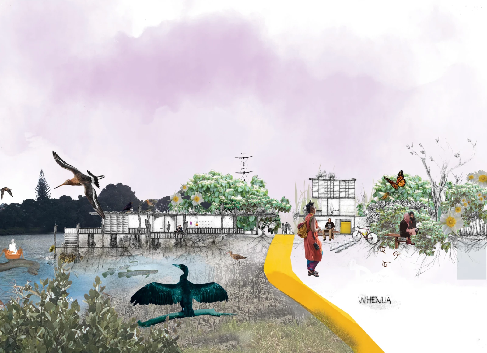

Rethinking AIO
Research Project
Architectural Thinking
Ongoing Research
Rethinking AIO questions conventional architectural practice by exploring regenerative thinking before design begins. It investigates observation, relationships and systems thinking as the foundation for creating places that are resilient, responsive and deeply connected to their environment.
Research in progress.

Rethinking AIO
Research Project